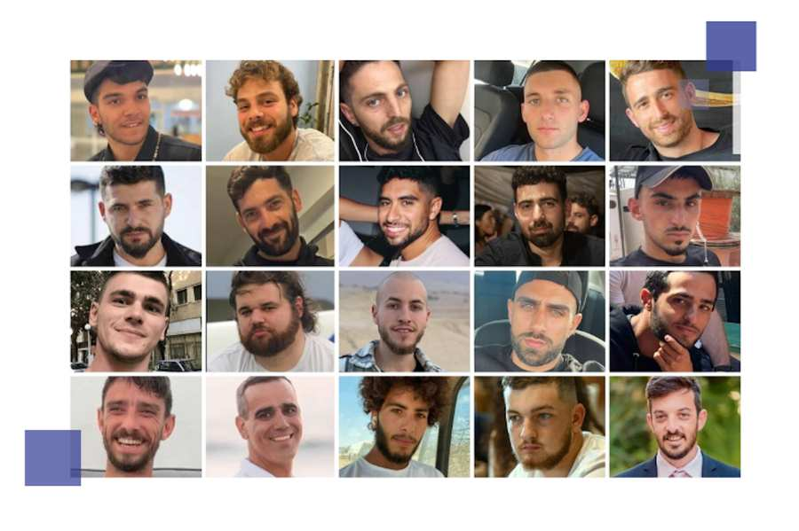
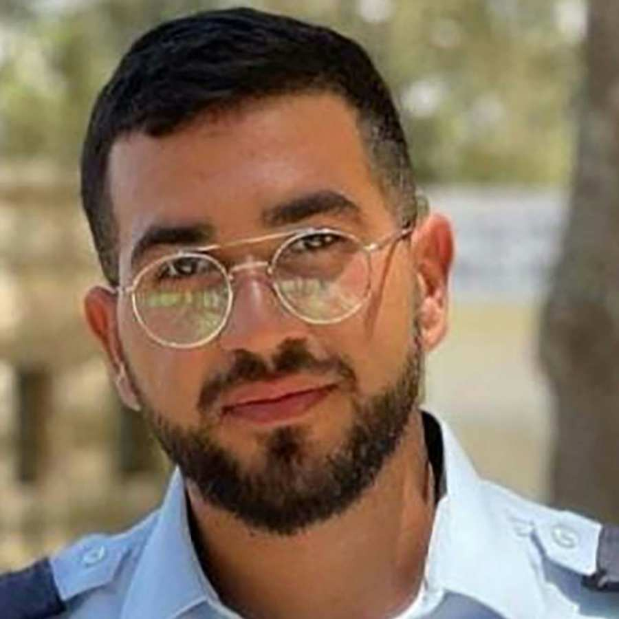
Der Leichnam der Hamas-Geisel Ran Gvili wurde geborgen und nach Israel überführt. Damit ist das letzte noch in Gaza verbliebene Opfer der Entführungen vom 7. Oktober 2023 in seine Heimat zurückgekehrt.
Nach 738 Tagen wurden alle lebenden Geiseln aus den Händen der Terroristen befreit!
Welcome Home: Elkana Bohbot, Matan Angrest, Avinatan Or, Yosef-Haim Ohana, Alon Ohel, Evyatar David, Guy Gilboa-Dalal, Rom Braslavski, Gali Berman, Ziv Berman. Third row, from left: Eitan Mor, Segev Kalfon, Nimrod Cohen, Maxim Herkin, Eitan Horn, Matan Zangauker, Bar Kupershtein, David Cunio, Ariel Cunio, Omri Miran.
Die Gemeinde hat sich vom ersten Tag an für die Freilassung der Geiseln eingesetzt. Ihr Schicksal war in den Gebeten und Gedanken sehr vieler Gemeindemitglieder. Umso größer ist die Freude über ihre Rückkehr.
Hier finden Sie eine Übersicht über unterschiedliche Aktivitäten aus der Gemeinde, um auf das Schicksal der Geiseln hinzuweisen.
Gedenkveranstaltung am 5. Oktober 2025
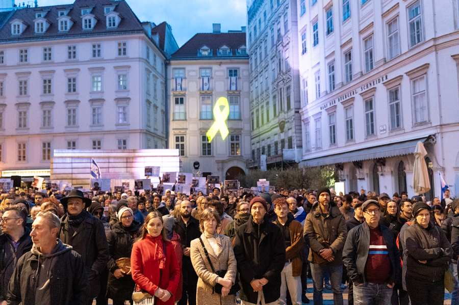
Am Sonntag, den 5. Oktober, versammelten sich am Judenplatz in Wien hunderte Menschen, um an die schrecklichen Ereignisse des 7. Oktober 2023 zu erinnern. Die Veranstaltung wurde von Jugendlichen der IKG Jugend moderiert und mitgestaltet. Aus weißen und gelben Rosen formten sie eine gelbe Schleife sowie das Wort „Leben“ und bereiteten einen berührenden Einstieg vor, in dem sie an die Schrecken jenes Tages erinnerten – an den Tag, an dem über 1.200 Menschen ermordet und mehr als 250 als Geiseln verschleppt wurden.
700 Tage seit dem Hamas-Massaker vom 7. Oktober
Wir gedenken der 1.200 Opfer des größten antisemitischen Massenmords seit der Schoa vom 7. Oktober 2023, der Verletzten und Traumatisierten und stehen zusammen mit unseren Familien und Freunden in Israel.
Wir erinnern an die 48 Geiseln, die immer noch von der Hamas in Gaza gefangen gehalten und in Terror-Tunneln gequält werden. Sie müssen rasch und bedingungslos befreit werden.
#BringThemHome
Mahnwache am Judenplatz für Geiseln im Gazastreifen
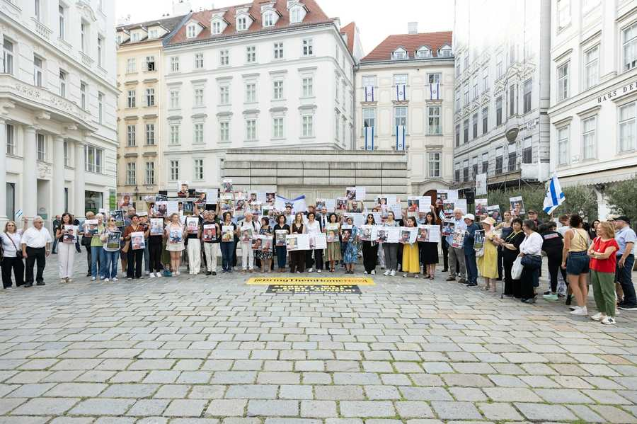
Am 5.8.2025 fand eine Mahnwache am Judenplatz für die Geiseln in Gaza statt. Neben zahlreichen Aktivistinnen und Vertretern der Kultusgemeinde waren auch der Botschafter des Staates Israel, David Roet, sowie Oberrabbiner Jaron Engelmayer anwesend.
Ein ausdrücklicher Dank galt Shaked Haran als Angehörige von Geiselfamilien aus Israel, die derzeit Österreich besucht und deren persönliche Geschichte im Zentrum der Mahnwache stand. „Dieses Gebet ist unsere Stimme. Eine Stimme für das Leben. Eine Stimme gegen das Schweigen“, hieß es abschließend. Mehr dazu
Die sterblichen Überreste von Ofra Keidar (71), Jonathan Samerano (22) und Shay Levinson (19) wurden bei einem Spezialeinsatz geborgen und nach Israel zurückgebracht.
Am 12. Mai wurde Edan Alexander (21) nach über 19 Monaten Geiselhaft im Gazastreifen befreit und nach Israel zurückgebracht.
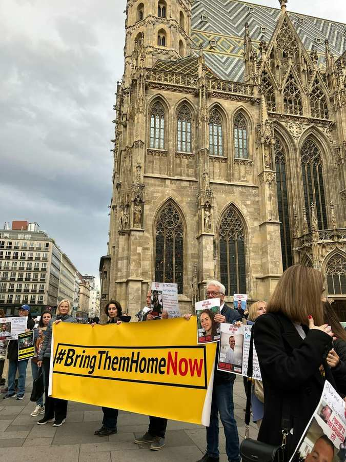
Mit einem Flashmob vor dem Stephansdom haben am 24. März zahlreiche Aktivistinnen und Aktivisten auf das Schicksal der im Gazastreifen festgehaltenen Geiseln hingewiesen. Gemeinsam fordern wir, dass alle aus den Händen der Terroristen befreit werden und wieder nach Hause kommen.
Freigelassene Geiseln: Jänner und Februar
Am 27. Februar wurden die sterblichen Überreste von Itzik Elgarat, Ohad Yahalomi, Shlomo Mantzur, Tsahi Idan nach Israel überstellt.
Am 22. Februar wurden der Österreicher Tal Shoham sowie die Geiseln Omer Shem Tov, Omer Wenkert, Eliya Cohen freigelassen.
Am 20. Februar wurden die sterblichen Überreste von den Kleinkindern Kfir Bibas und Ariel Bibas sowie von ihrer Mutter Shiri Bibas und Oded Lifshitz nach Israel überstellt.
Alexander (Sasha) Troufanov (29) und Sagui Dekel-Chen (36) wurden am Samstag, den 13. Februar befreit.
Eli Sharabi (52), Or Levy (34) und Ohad Ben Ami (56) wurden am Samstag, den 8. Februar im Zuge des Geiseldeals befreit.
Die Geiseln Ofer Calderon (53), Yarden Bibas (35) und Keith Siegel (65) wurden nach 483 Tagen in Geiselhaft am 1. Februar freigelassen.
Acht weitere Geiseln wurden am Donnerstag, den 30. Jänner 2025 befreit und nach Israel zurückgebracht. Unter ihnen Agam Berger (20), Arbel Yehoud (29) und Gadi Mozes (80) sowie 5 Personen aus Thailand.
Am Samstag, den 25. Jänner 2025 wurden 4 weitere Geiseln befreit. Die Soldatinnen Karina Ariev (20), Daniella Gilboa (20), Naama Levy (20) und Liri Albag (19) konnten nach über 15 Monaten nach Israel zurückkehren.
Im Zuge des Geiselabkommens wurden am 19. Jänner 2025 die ersten drei Geiseln, Romi Gonen (24), Emily Damari (28) und Doron Steinbrecher (31) aus der Gewalt der Hamas nach Israel zurückgebracht.
Solidaritätskundgebung für weibliche Geiseln in Gaza vor dem UNO-Gebäude in Wien
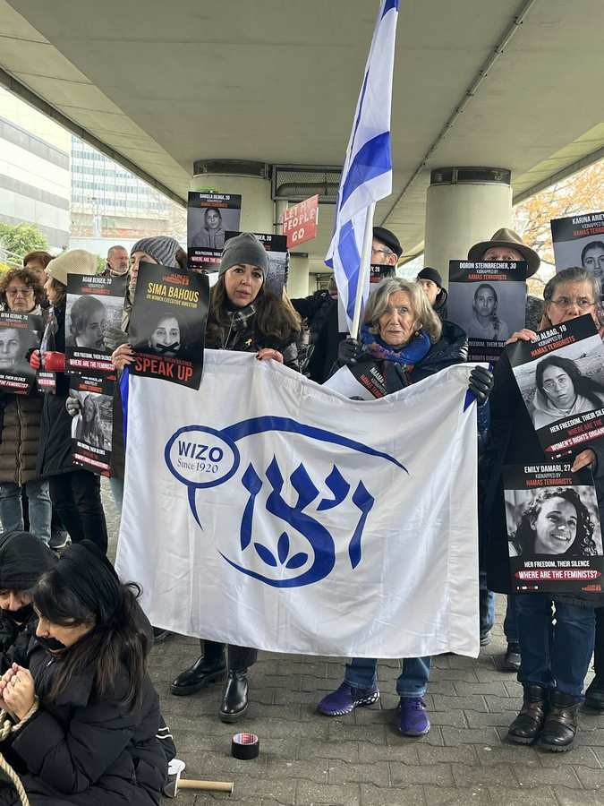
Am 25. November versammelten sich zahlreiche Teilnehmerinnen und Teilnehmer zur Mittagszeit vor dem UNO-Gebäude am Muhammad-Asad-Platz in Wien, um ein starkes Zeichen der Solidarität mit den weiblichen Geiseln in Gaza zu setzen.
Die Veranstaltung wurde von der international anerkannten Expertin für Frauenrechte, Dr. Ruth Halperin-Kaddari, begleitet, die mit zwei inspirierenden Reden die Bedeutung der Kundgebung unterstrich.
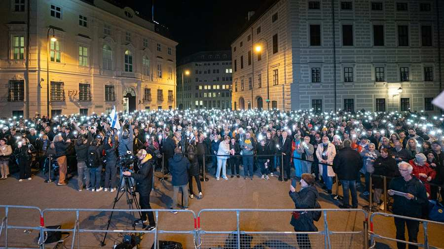
Rund 2.000 Menschen haben sich auf Einladung der IKG und über 30 Mitveranstaltern am Abend des 7. Oktober 2024 am Ballhausplatz im Herzen von Wien versammelt, um am ersten Jahrestag des genozidalen Massakers der Hamas in Israel ein starkes rot-weiß-rotes Zeichen der Solidarität nach Israel zu senden. Gemeinsam mit unseren Mitgliedern gedachten zahlreiche Freundinnen und Freunde aus Politik, Kultur, Medien und Zivilgesellschaft den mehr als 1.200 Opfern des Massakers und forderten die sofortige Befreiung der 101 weiterhin in Gaza gefangen gehaltenen israelischen Geiseln. Seitens der Bundesregierung nahmen die Bundesminister Karoline Edtstadler, Werner Kogler, Martin Kocher, Leonore Gewessler, Martin Polaschek teil sowie der israelische Botschafter David Roet, SPÖ-Vorsitzender Andreas Babler und mehrere Abgeordnete zum Nationalrat. Der Abend wurde mit Gebeten und künstlerischen Beiträgen eröffnet, weiters wandten sich Angehörige von Geiseln an die Menschen in Österreich und Vertreter und Vertreterinnen der Jugend- und Studierendenorganisationen verlasen die Namen der Personen, die noch immer in der Gewalt der Hamas sind. Einen Bericht über die Gedenkveranstaltung finden Sie hier.
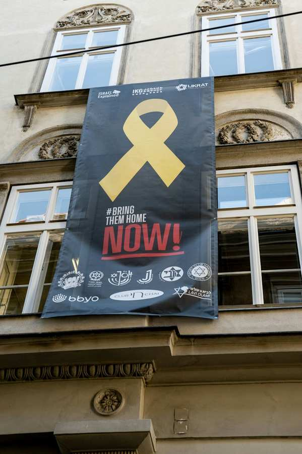
Am 7. Oktober setzten auch die Jugendorganisationen der Jüdischen Gemeinde Wien mit einem großen Banner am Gebäude der IKG Wien ein starkes Zeichen der Solidarität mit den verbliebenen Geiseln in Gaza: BRING THEM HOME NOW!
Im Parlament war im September die interaktive Ausstellung der Künstlerin Inbar Hasson zu sehen, die an das Schicksal der über 100 Geiseln erinnert, die sich noch immer in der Gefangenschaft der Hamas befinden. Die IKG Wien präsentierte eine interaktive Version der Ausstellung im Wiener Stadttempel.
In der Nacht auf den 1. September wurden die Leichen von Hersh Goldberg-Polin s.A. (23), Eden Yerushalmi s.A. (24), Ori Danino s.A. (25), Alex Lobanov s.A. (32), Carmel Gat s.A.(40) und Almog Sarusi s.A. (27) aus dem Gazastreifen von der israelischen Armee geborgen. Berichten zufolge wurden sie 48 bis 72 Stunden vor dem Eintreffen der IDF von Terroristen der Hamas ermordet.
Am 27.8.2024 wurde Qaid Farhan Alkadi (52) nach 325 Tagen aus den Fesseln der Hamas befreit. Wir sind überglücklich, dass Noa Argamani, Almog Meir Jan, Andrey Kozlov und Shlomi Ziv am 8. Juni lebend von der israelischen Armee aus den Fesseln der Terroristen befreit werden konnten.
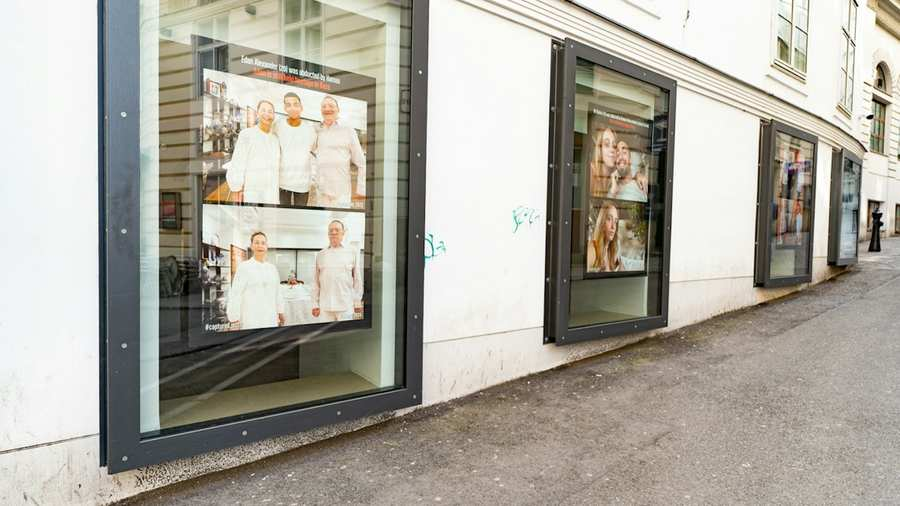
In den Schaufenstern in der Seitenstettengasse erinnerte über Monate die Ausstellung „Captured“ von Sharon Derhy an die von der Hamas entführten israelischen Geiseln. Die Bilder zeigen die Momente vor und nach der Entführung geliebter Freundinnen und Familienangehöriger. Die originalen und nachgestellten Fotos, nebeneinander präsentiert, veranschaulichen die Lücke in den Herzen der Familien und zeigen ihre Sorge und quälenden Schmerzen, während sie auf die Rückkehr ihrer Lieben warten.
In seinen Pessach-Grüßen rückt der Präsident der Israelitischen Kultusgemeinde, Oskar Deutsch, das Schicksal der Geiseln und den Kampf für ihre Freiheit ins Zentrum seiner Botschaft.
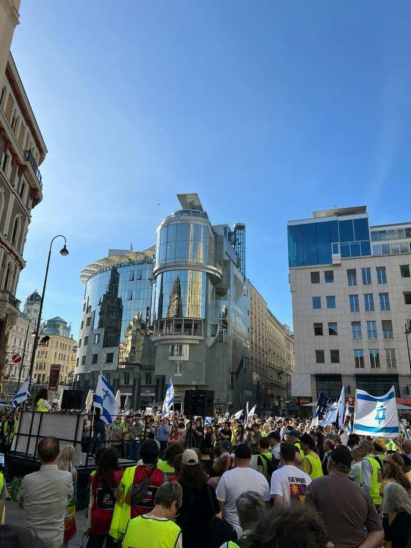
Im April waren noch immer sind über 130 israelische Geiseln in der Gewalt der mörderischen Terroristen der Hamas – am Sonntag, dem 7. April waren es genau sechs Monate. Die Befreiung der Geiseln ist der unausweichlich erste Schritt zu Frieden. Auf einer Kundgebung im Rahmen des Bündnisses "Bring Them Home Now!" versammelten sich rund 1000 Menschen zu einem Walkathon, um für die Freilassung der Geiseln zu demonstrieren.
Diese Aktion wurde unterstützt von: Israelitische Kultusgemeinde Wien, Bnei Akiva Wien, Chabad House Vienna, CIC Vienna, Förderverein des JIFE, Habait Israeli Community, Hashomer Hatzair, Jad be Jad, Jewish Women Austria, Jüdisches Institut für Erwachsenenbildung (JIFE), Koordinierungsausschuss für christlich-jüdische Zusammenarbeit, KSpace Vienna, Mizrachi Wien, Ohel Avraham Synagoge, Republikanischer Klub, VBJ (Verein Bucharischer Juden), Jewish Russian Community Vienna (JRCV), ÖIG - Österreichisch Israelische Gesellschaft , Jewish Welcome Service, Wiener Jüdischer Chor, WINA Stadtmagazin, ZFÖ - Zionistische Föderation in Österreich
Auch die Zivilbevölkerung im Gaza-Streifen befindet sich in der Geiselhaft der Terrororganisation Hamas und ihrer Verbündeten. Gemeinsam haben viele auf Social Media daran erinnert, dass die Rückkehr der Geiseln zu ihren Familien der Schlüssel für ein Ende der Kampfhandlungen und des zivilen Leids in der Region ist. Daher heißt es auf den Sujets: #BringThemHome = BringPeace.
Steckbriefe aller Geiseln für Soziale Medien.
Neben dem Steckbrief von Kfir Bibas, finden Sie hier noch die Links für alle weiteren Geiseln im Hochformat für Stories sowie quadratisch für Status-Beiträge.
Klicken Sie auf die blauen Schaltflächen, um zur Galerie mit den Steckbriefen zu gelangen.
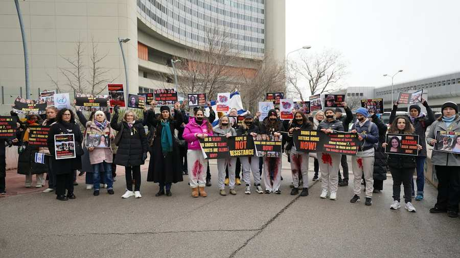
Am 8. März, dem internationalen Frauentag, demonstrierten engagierte Aktivistinnen am Platz der Vereinten Nationen dafür, dass die sexuelle Gewalt gegen israelische Frauen anerkannt und ihnen geglaubt wird. Mit der selbstbewussten Aktion stellen sich die Frauen auch jenen entgegen, die diese Verbrechen infrage stellen oder schlichtweg leugnen.
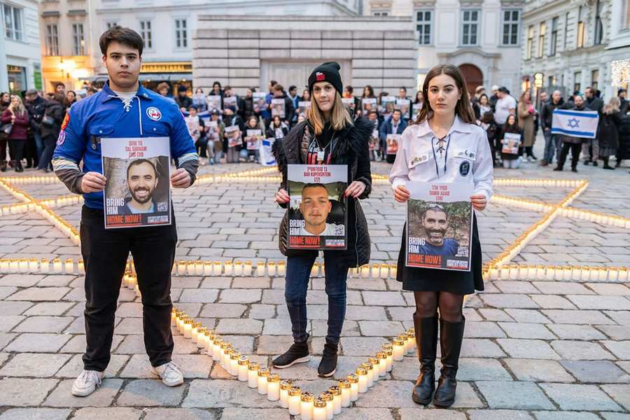
Wir danken allen, die mit ihrer stillen Anteilnahme am 7. März am Judenplatz gezeigt haben, dass die Hinterbliebenen und auch wir als jüdische Gemeinde nicht alleine sind. Durch unseren Zusammenhalt sind wir stark.
Gemeinsam wurde die Hatikvah sowie andere Lieder im Gedenken an die Opfer und Geiseln angestimmt. Der Oberrabbiner der IKG Wien, Jaron Engelmayer, sprach das Gebet.
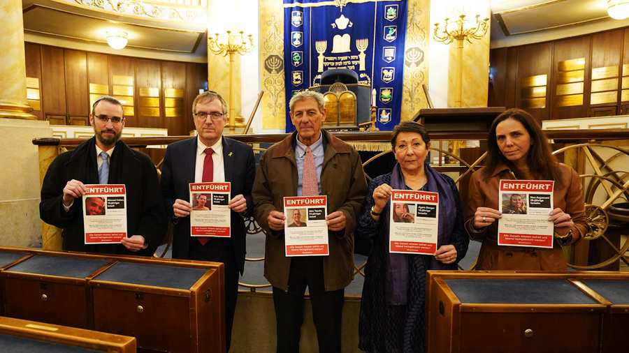
Gemeinsam mit dem Knesset-Abgeordneten Ram Ben Barak, des Botschafters David Roet und der Gesandten Maya Karmely Sommer stellt die IKG Wien beim Besuch des Stadttempels, am 22. Februar die von der Terrororganisation Hamas verschleppten Geiseln in den Fokus. Wir alle gemeinsam fordern, dass die Geiseln aus den Händen der Terroristen befreit werden und wieder nach Hause zu ihren Familien kommen! #bringthemhome
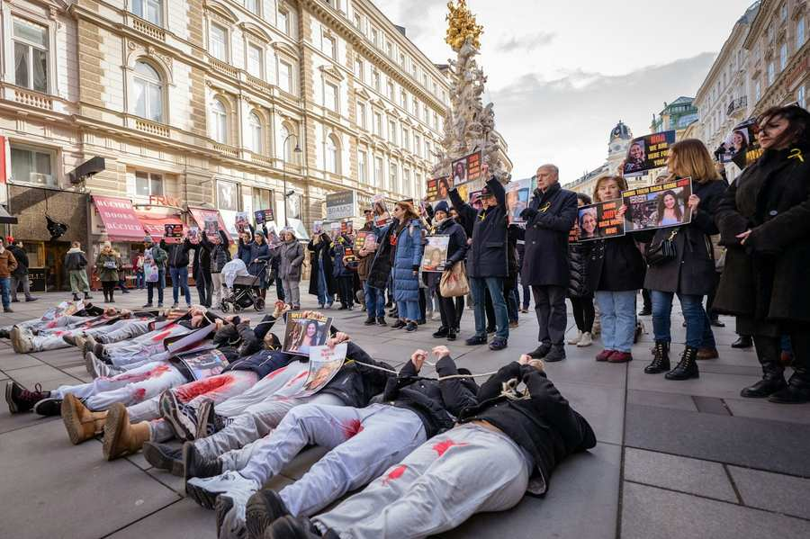
Um die 70 Aktivistinnen und Aktivisten trafen sich am 13. Februar zu Mittag in der Innenstadt, um an die von der Terror-Organisation Hamas entführten Geiseln zu erinnern. Im Fokus der Aktion von "Zusammen Vienna" und Gemeindemitgliedern standen die Schicksale der Frauen, die am 7. Oktober Opfer von Vergewaltigungen als Akt des Terrors wurden sowie die vielen unschuldig Ermordeten. Wir möchten allen dafür danken, dieses eindringliche Zeichen gesetzt zu haben. Wenn auch Sie an zukünftigen Aktionen teilnehmen wollen, können Sie sich hier anmelden.
Am 11. Februar erreichte uns die glückliche Nachricht, dass Fernando Simon Marman (60) und Norberto Louis Har (70) bei einer Operation der israelischen Armee aus den Händen der Terroristen befreit werden konnten.
Alle Geiseln müssen befreit und lebend heimgebracht werden!
Am 15. Januar waren es bereits 100 Tage seit dem brutalen Massaker der Terrororganisation Hamas auf Israel. In einer gemeinsamen Aktion erinnerten Gemeindemitglieder, Prominente und Freunde vor der Staatsoper an das Schicksal der über 100 Menschen, die immer noch im Gazastreifen als Geiseln gehalten werden.
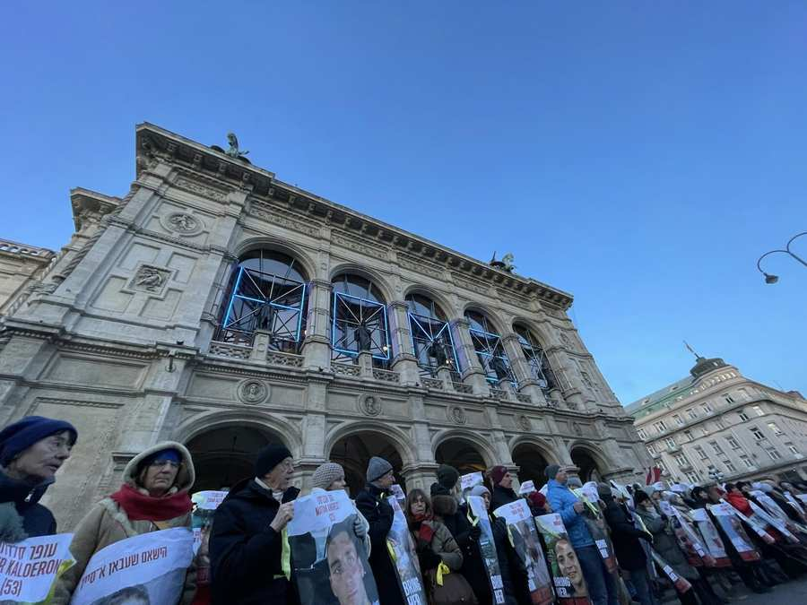
Am 25. Oktober kam Bundesministerin Edtstadler zu einem Solidaritätsbesuch in die Kultusgemeinde. Im Zuge dessen wurde auch den Vermissten gedacht.
Das Profil berichtete über das Schicksal von einer verschleppten österreichisch-jüdischen Familie. Einen Bericht über erste Vermisstenanzeigen, die bereits in Wien affichiert wurden, finden Sie hier.
Weitere Informationen zur Kampagne finden Sie hier.
Folgende Personen befinden sich nicht mehr in den Händen der Terrororganisation Hamas und sind mittlerweile wieder zurück in Israel:
27.08.2024: Qaid Farhan Alkadi wurde befreit und nach Hause gebracht
8.6.2024: Noa Argamani, Almog Meir Jan, Andrey Kozlov und Shlomi Ziv wurden befreit
11.02.24: Marman (60) und Norberto Louis Har (70)
1.12.2023: Bilal Ziyadne (18), Aisha Ziyadne (17), Ilana Gritzewsky Kimchi (30), Nili Margalit (41), Shani Goren (29), Amit Soussana (40), Sapir Cohen (29), Mia Shem (21)
30.11.2023: Raz Ben Ami (57), Yarden Roman (36), Liat Atzili (49), Moran Stela Yanai (40), Liam Or (18), Itay Regev (18), Ofir Engel (17), Amit Shani (16), Gali Tarshansky (13), Raaya Rotem (54), Yelena Trupanob (50), Irena Tat (73)
29.11.2023: Ditza Heiman (84), Tamar Metzger (78), Noralin Babadila Agojo (60), Ada Sagi (75), Meirav Tal (53) , Rimon Kirsht (36), Ofelia Roitman (77), Gabriela Leimberg (59), Mia Leimberg (17), Clara Marman (63)
28.11.2023: Sharon Aloni Cunio (34), Emma Cunio (3), Yuli Cunio (3), Sahar Calderon (16), Erez Calderon (12), Karina Engel-Bart (53), Mika Engel-Bart (18), Yuval Engel-Bart (11), Yagil Yaakov (13), Or Yaakov (17), Eitan Yahalomi (12)
24.11.23: Danielle (43) und Emilia (5) Aloni, Channah Peri (79), Hannah Katzir (77), Margalit Mozes (78), Doron (34), Raz (4) und Aviv (2) Katz-Asher, Ohad (9), Keren (54) und Ruth Munder (78), Yaffe Adar (85), Adina Moshe (72)
25.11.23: Shoshan Haran (85), Adi (38), Nave (8) und Yahel Shosham (3), Noam (12) und Sharon Avigdori (52), Noam (17) und Alma Or (13), Shiri (53) und Noga Weiss (18), Maya Regev (21), Hila Rotem (13), Emily Hand (8)
26.11.23: Avigail Idan (4), Aviva Siegal (62), Dafna (14) und Ella Elyakim (8), Hagar (40), Ofry (10), Yuval (8) und Oria Brodutch (4), Chen (49), Agam (17), Gal (11) und Tal Goldstein-Almog (9), Alma Avraham (84), Roni Krivoi (25)
Podcast
Erwin Steinhauer erzählt die Geschichten einiger von der Hamas entführten Kinder, Frauen und Männer. Viele von ihnen wurden aus ihrem Haus verschleppt. Auch, werden alle Namen der Geiseln verlesen. Jede und jeder Einzelne muss aus den Händen der Terroristen befreit werden. Eine Produktion der IKG.Kultur
Die 74-jährige kanadisch-israelische Friedensaktivistin, Vivian SIlver, die seit dem Großangriff der radikalislamischen Hamas auf Israel als vermisst galt, wurde für tot erklärt. Ihre sterblichen Überreste wurden nach knapp 5 Wochen identifiziert.
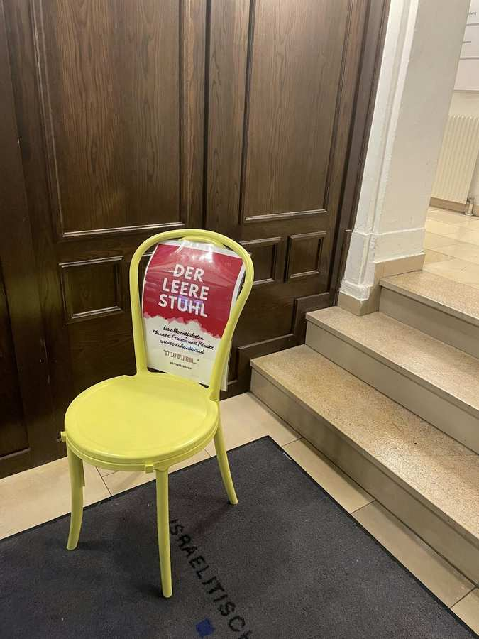
Der leere Stuhl
Der leere Stuhl ist ein Symbol für all die geliebten Menschen, die
derzeit in unserer Mitte fehlen. Dieser steht an unterschiedlichen Orten, wie öffentlichen Plätzen, Eingangshallen, Universitäten und dergleichen.
Ein leerer Stuhl mit einem Plakat, auf dem steht: Dieser Stuhl bleibt leer, bis alle wieder zu Hause sind. וְשָׁ֥בוּ בָנִ֖ים לִגְבוּלָֽם׃ Your children shall return to their country. #Bringthemhomenow
Wenn Sie auch einen leeren Stuhl aufstellen möchten, können Sie hier das Poster herunterladen.
In Erinnerung an die entführten minderjährigen Hamas-Geiseln: Kinderwagen an Stephansplatz
36 leere Kinderwagen mit Vermisstenanzeigen erinnern am Montag, den 30.10.2023 im Zentrum Wiens an die verschleppten minderjährigen Hamas-Geiseln. Organisiert wurde die Aktion von unterschiedlichen Organisationen jüdischer Zivilgesellschaft.
Ein leerer Tisch für die 242 von der Hamas verschleppten Geiseln
Am Freitag, den 27. Oktober wurde für die 242 Geiseln in der Wiener Innenstadt einen Schabbat-Tisch aufgestellt. So will ein breites Bündnis auf die in den Gazastreifen entführten israelischen Geiseln aufmerksam machen.
Bildquelle: JÖH/Ouriel Morgensztern
Großflächige Projektion der Kampagne: "#BringThemBack"
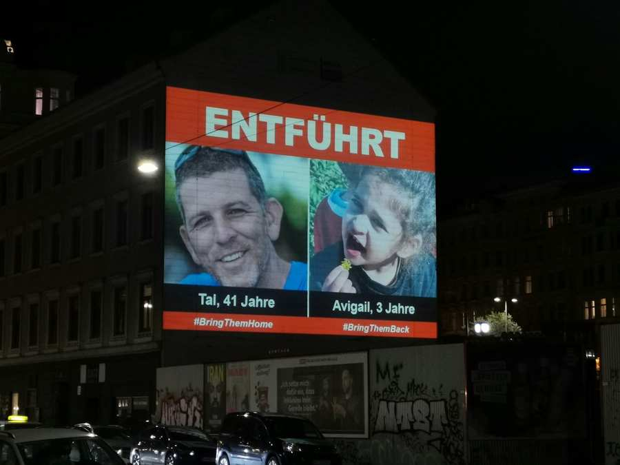
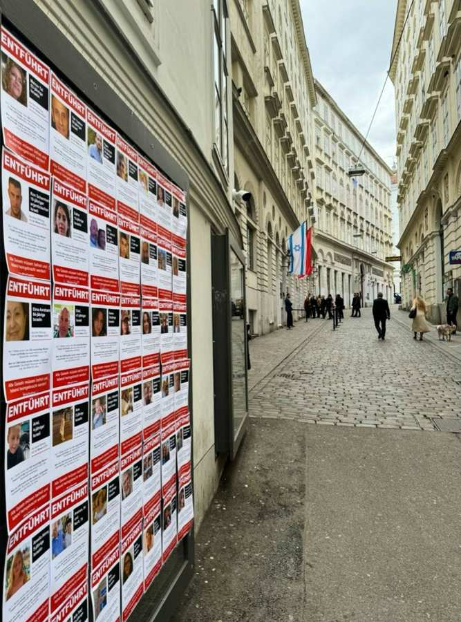
Im 4. Bezirk in Wien ist aktuell eine großflächige Projektion über eine Häuserwand zu sehen. Gezeigt werden Menschen, die am 7. Oktober von der Hamas nach Gaza verschleppt wurden.
Am 7. Oktober wurden über 242 unschuldige Männer, Frauen und Kinder aus Israel entführt und in den Gazastreifen verschleppt.
Mehr als 1,400 Israelis wurden ermordet, regelrecht abgeschlachtet. Mehr als 4.500 Israelis wurden verletzt. Mehr als 7.000 Raketen wurden aus Gaza nach Israel abgefeuert. Das jüngste Terroropfer war 3 Monate jung, das älteste 85 Jahre.